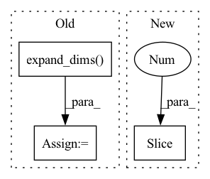

Pattern ID :36488

Before Change
data = pickle.load(f)
xs, us = data
us = np.expand_dims(us, axis=-1)
// import pandas as pd
After Change
import matplotlib.pyplot as plt
for i in range(100):
plt.plot(xs[i,1:,0], xs[i,1:,1])
plt.show()
return xs, us
In pattern: SUPERPATTERN
Frequency: 3
Non-data size: 3
Instances
Fragment ID: 103182846
Project Name: mit-acl/nn_robustness_analysis
Commit Name: 3f301ce67be70902840d23f40aecc98b346c412b
Time: 2021-02-16
Author: mfe@mit.edu
File Name: nn_closed_loop/nn_closed_loop/utils/nn.py
M Class Name: AnonimousClass
N Class Name: AnonimousClass
M Method Name: load_data(0)
N Method Name: load_data(0)
M Parent Class:
N Parent Class:
M File Name: nn_closed_loop/nn_closed_loop/utils/nn.py
N File Name: nn_closed_loop/nn_closed_loop/utils/nn.py
M Start Line: 48
M End Line: 52
N Start Line: 57
N End Line: 70
'>
Before Change
shuffle_index = tf.random.shuffle(tf.range(batch_size))
images = images - pad_crops + tf.gather(pad_crops, shuffle_index)
labels = tf.cast(labels, "float32")
label_mix_weight = tf.cast(tf.expand_dims(mix_weight, -1), "float32")
labels = labels * label_mix_weight + tf.gather(labels, shuffle_index) * (1 - label_mix_weight)
return images, labels
After Change
crops = tf.image.crop_to_bounding_box(images, offset_height, offset_width, target_height, target_width)
pad_crops = tf.image.pad_to_bounding_box(crops, offset_height, offset_width, hh, ww)
images = images - pad_crops + pad_crops[::-1]
labels = tf.cast(labels, "float32")
labels = labels * mix_weight + labels[::-1] * (1.0 - mix_weight)
return images, labels
'>
Fragment ID: 103182844
Project Name: leondgarse/keras_cv_attention_models
Commit Name: a05afc217c7710193105435e4240723aba7eef2b
Time: 2021-12-05
Author: leondgarse@gmail.com
File Name: keras_cv_attention_models/imagenet/data.py
M Class Name: AnonimousClass
N Class Name: AnonimousClass
M Method Name: cutmix(3)
N Method Name: cutmix(4)
M Parent Class:
N Parent Class:
M File Name: keras_cv_attention_models/imagenet/data.py
N File Name: keras_cv_attention_models/imagenet/data.py
M Start Line: 263
M End Line: 293
N Start Line: 313
N End Line: 323
'>
Before Change
dest_boxes = tf.zeros_like(anchors)
dest_boxes = tf.tensor_scatter_nd_update(dest_boxes, matched_idxes_nd, encoded_anchors)
anchor_classes = tf.expand_dims(tf.cast(anchor_classes, dest_boxes.dtype), -1)
rr = tf.concat([dest_boxes, anchor_classes], axis=-1)
return rr
After Change
num_anchors = anchors.shape[0]
valid_bboxes_pick = tf.where(bbox_labels[:, -1] > 0)[:, 0]
bbox_labels = tf.gather(bbox_labels, valid_bboxes_pick)
bboxes, labels = bbox_labels[:, :4], bbox_labels[:, 4]
anchor_ious = iou_nd(bboxes, anchors)
anchor_best_iou_ids = tf.argmax(anchor_ious, axis=0)
'>
Fragment ID: 103182841
Project Name: leondgarse/keras_cv_attention_models
Commit Name: 72442f0cd3114eb4a7a30ae1a58e568c70d93172
Time: 2022-02-24
Author: leondgarse@gmail.com
File Name: keras_cv_attention_models/coco/data.py
M Class Name: AnonimousClass
N Class Name: AnonimousClass
M Method Name: assign_anchor_classes_by_iou_with_bboxes(4)
N Method Name: assign_anchor_classes_by_iou_with_bboxes(5)
M Parent Class:
N Parent Class:
M File Name: keras_cv_attention_models/coco/data.py
N File Name: keras_cv_attention_models/coco/data.py
M Start Line: 88
M End Line: 120
N Start Line: 92
N End Line: 125